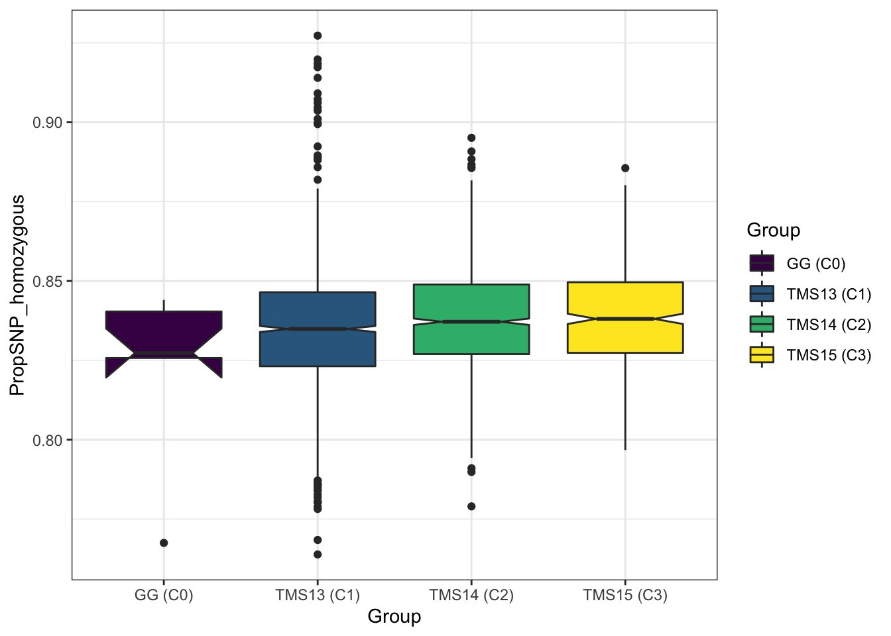
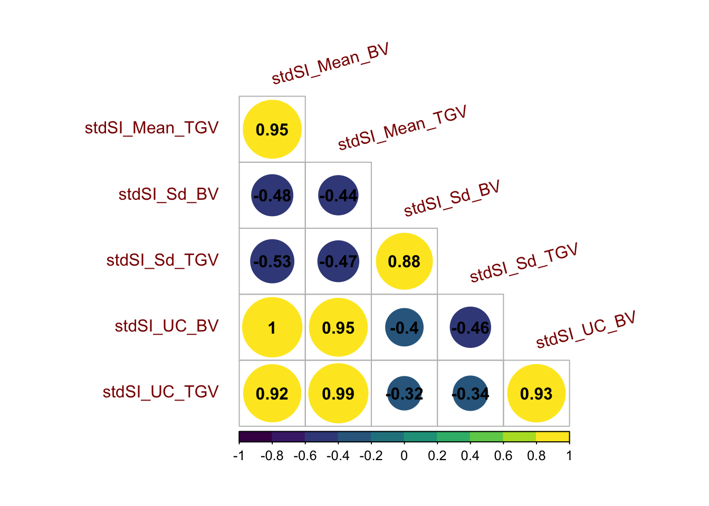
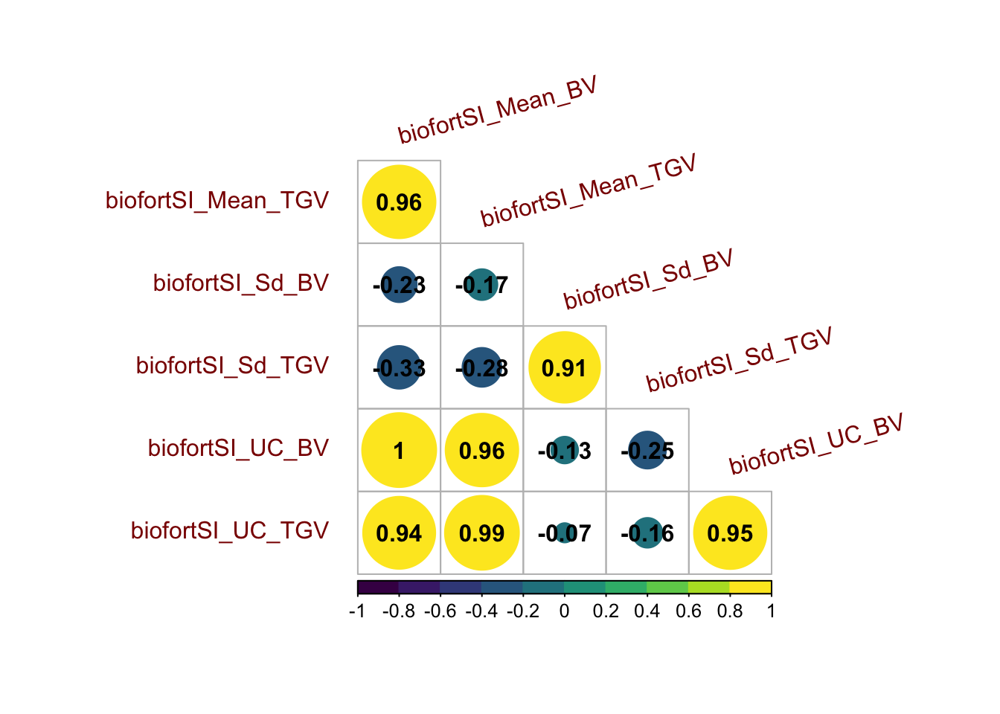

Supplementary Figures
2021-March-22
Last updated: 2021-03-24
Checks: 7 0
Knit directory: PredictOutbredCrossVar/
This reproducible R Markdown analysis was created with workflowr (version 1.6.2). The Checks tab describes the reproducibility checks that were applied when the results were created. The Past versions tab lists the development history.
Great! Since the R Markdown file has been committed to the Git repository, you know the exact version of the code that produced these results.
Great job! The global environment was empty. Objects defined in the global environment can affect the analysis in your R Markdown file in unknown ways. For reproduciblity it’s best to always run the code in an empty environment.
The command set.seed(20191123) was run prior to running the code in the R Markdown file. Setting a seed ensures that any results that rely on randomness, e.g. subsampling or permutations, are reproducible.
Great job! Recording the operating system, R version, and package versions is critical for reproducibility.
Nice! There were no cached chunks for this analysis, so you can be confident that you successfully produced the results during this run.
Great job! Using relative paths to the files within your workflowr project makes it easier to run your code on other machines.
Great! You are using Git for version control. Tracking code development and connecting the code version to the results is critical for reproducibility.
The results in this page were generated with repository version 45e6b20. See the Past versions tab to see a history of the changes made to the R Markdown and HTML files.
Note that you need to be careful to ensure that all relevant files for the analysis have been committed to Git prior to generating the results (you can use wflow_publish or wflow_git_commit). workflowr only checks the R Markdown file, but you know if there are other scripts or data files that it depends on. Below is the status of the Git repository when the results were generated:
Ignored files:
Ignored: .DS_Store
Ignored: .Rhistory
Ignored: .Rproj.user/
Ignored: output/.DS_Store
Untracked files:
Untracked: Icon
Untracked: PredictOutbredCrossVarMS_ResponseToReviews_R1.gdoc
Untracked: figure/
Untracked: manuscript/
Untracked: output/crossPredictions/
Untracked: output/gblups_DirectionalDom_parentwise_crossVal_folds.rds
Untracked: output/gblups_geneticgroups.rds
Untracked: output/gblups_parentwise_crossVal_folds.rds
Untracked: output/mtMarkerEffects/
Unstaged changes:
Modified: analysis/NGCleadersCall.Rmd
Modified: code/fitDirectionalDomMtBRR.R
Modified: code/fitmtBRR.R
Modified: code/getDirectionalDomGenomicBLUPs.R
Modified: code/getDirectionalDomMtCrossMeanPreds.R
Modified: code/getDirectionalDomMtCrossVarBVpreds.R
Modified: code/getDirectionalDomMtCrossVarTGVpreds.R
Modified: code/getDirectionalDomVarComps.R
Modified: code/getGenomicBLUPs.R
Modified: code/getMtCrossMeanPreds.R
Modified: code/getMtCrossVarPreds.R
Modified: code/getUntestedMtCrossVarPreds.R
Modified: code/getVarComps.R
Modified: data/blups_forawcdata.rds
Modified: data/genmap_awc_May2020.rds
Modified: data/parentwise_crossVal_folds.rds
Modified: data/ped_awc.rds
Modified: data/selection_index_weights_4traits.rds
Modified: output/CrossesToPredict_top100stdSI_and_209originalParents.rds
Modified: output/accuraciesMeans.rds
Modified: output/accuraciesUC.rds
Modified: output/accuraciesVars.rds
Modified: output/crossRealizations/realizedCrossMeans.rds
Modified: output/crossRealizations/realizedCrossMeans_BLUPs.rds
Modified: output/crossRealizations/realizedCrossMetrics.rds
Modified: output/crossRealizations/realizedCrossVars.rds
Modified: output/crossRealizations/realizedCrossVars_BLUPs.rds
Modified: output/crossRealizations/realized_cross_means_and_covs_traits.rds
Modified: output/crossRealizations/realized_cross_means_and_vars_selindices.rds
Modified: output/ddEffects.rds
Modified: output/gebvs_ModelA_GroupAll_stdSI.rds
Modified: output/obsVSpredMeans.rds
Modified: output/obsVSpredUC.rds
Modified: output/obsVSpredVars.rds
Modified: output/pmv_DirectionalDom_varcomps_geneticgroups.rds
Modified: output/pmv_varcomps_geneticgroups.rds
Modified: output/pmv_varcomps_geneticgroups_tidy_includingSIvars.rds
Modified: output/propHomozygous.rds
Modified: output/top100stdSI.rds
Note that any generated files, e.g. HTML, png, CSS, etc., are not included in this status report because it is ok for generated content to have uncommitted changes.
These are the previous versions of the repository in which changes were made to the R Markdown (analysis/SupplementaryFigures.Rmd) and HTML (docs/SupplementaryFigures.html) files. If you’ve configured a remote Git repository (see ?wflow_git_remote), click on the hyperlinks in the table below to view the files as they were in that past version.
| File | Version | Author | Date | Message |
|---|---|---|---|---|
| html | 2e6702a | wolfemd | 2021-03-24 | Build site. |
| Rmd | 2ec2ff8 | wolfemd | 2021-03-24 | Update graphics device so each figure saves to unique file name and displays properly in both HTML and PDF outputs. |
| html | be1e9fc | wolfemd | 2021-03-24 | Build site. |
| Rmd | f73b05f | wolfemd | 2021-03-24 | Update to match revised manuscript. Several comparisons moved to Appendix to streamline primary results, figures, etc. |
| html | 4de1330 | wolfemd | 2021-02-01 | Build site. |
| Rmd | 883b1d4 | wolfemd | 2021-02-01 | Update the syntax highlighting and code-block formatting throughout for |
| Rmd | 6a10c30 | wolfemd | 2021-01-04 | Submission and GitHub ready version. |
| html | 6a10c30 | wolfemd | 2021-01-04 | Submission and GitHub ready version. |
library(tidyverse); library(magrittr); library(ragg); library(patchwork)Supplementary Figures (Main)
Figure S01: Genome-wide proportion homozygous
propHom<-readxl::read_xlsx(here::here("manuscript","SupplementaryTables.xlsx"),sheet = "TableS14")
propHom %>%
mutate(Group=ifelse(!grepl("TMS13|TMS14|TMS15", GID),"GG (C0)",NA),
Group=ifelse(grepl("TMS13", GID),"TMS13 (C1)",Group),
Group=ifelse(grepl("TMS14", GID),"TMS14 (C2)",Group),
Group=ifelse(grepl("TMS15", GID),"TMS15 (C3)",Group)) %>%
ggplot(.,aes(x=Group,y=PropSNP_homozygous,fill=Group)) + geom_boxplot(notch=TRUE) +
theme_bw() +
scale_fill_viridis_d()
| Version | Author | Date |
|---|---|---|
| be1e9fc | wolfemd | 2021-03-24 |
Figure S01: Boxplot of the genome-wide proportion of homozygous SNPs in each of four genetic groups comprising the study pedigree.
Figure S02: Correlations among phenotypic BLUPs (including Selection Indices)
library(tidyverse); library(magrittr);
# Selection weights -----------
indices<-readxl::read_xlsx(here::here("manuscript","SupplementaryTables.xlsx"),sheet = "TableS01")
# BLUPs -----------
blups<-readRDS(here::here("data","blups_forawcdata.rds")) %>%
select(Trait,blups) %>%
unnest(blups) %>%
select(Trait,germplasmName,BLUP) %>%
spread(Trait,BLUP) %>%
select(germplasmName,all_of(c("DM","logFYLD","MCMDS","TCHART")))
blups %<>%
select(germplasmName,all_of(indices$Trait)) %>%
mutate(stdSI=blups %>%
select(all_of(indices$Trait)) %>%
as.data.frame(.) %>%
as.matrix(.)%*%indices$stdSI,
biofortSI=blups %>%
select(all_of(indices$Trait)) %>%
as.data.frame(.) %>%
as.matrix(.)%*%indices$biofortSI)pngfile <- here::here("docs",fs::path(knitr::fig_path(), "figureS2.png"))
agg_png(pngfile, width = 17.8, height = 11.13, units = "cm", res = 300, scaling = 0.8)
library(patchwork)
p1<-ggplot(blups,aes(x=stdSI,y=biofortSI)) + geom_point(size=1.25) + theme_bw()
corMat<-cor(blups[,-1],use = 'pairwise.complete.obs')
(p1 | ~corrplot::corrplot(corMat, type = 'lower', col = viridis::viridis(n = 10), diag = T,addCoef.col = "black")) +
plot_layout(nrow=1, widths = c(0.35,0.65)) +
plot_annotation(tag_levels = 'A',
title = 'Correlations among phenotypic BLUPs (including Selection Indices)')
invisible(dev.off())
knitr::include_graphics(pngfile)
Figure S02: Correlations among BLUPs (including Selection Indices). (A) StdSI vs. BiofortSI computed from i.i.d. BLUPs. (B) Heatmap of the correlation among BLUPs for each of four component traits and two derived selection indices.
Figure S03: Realized selection intensities: measuring post-cross selection
library(patchwork)
## Table S13: Realized within-cross selection metrics
crossmetrics<-readxl::read_xlsx(here::here("manuscript","SupplementaryTables.xlsx"),sheet = "TableS13")
propPast<-crossmetrics %>%
mutate(Cycle=ifelse(!grepl("TMS13|TMS14|TMS15",sireID) & !grepl("TMS13|TMS14|TMS15",damID),"C0",
ifelse(grepl("TMS13",sireID) | grepl("TMS13",damID),"C1",
ifelse(grepl("TMS14",sireID) | grepl("TMS14",damID),"C2",
ifelse(grepl("TMS15",sireID) | grepl("TMS15",damID),"C3","mixed"))))) %>%
select(Cycle,starts_with("prop")) %>% distinct %>%
pivot_longer(cols = contains("prop"),values_to = "PropPast",names_to = "StagePast",names_prefix = "propPast|prop") %>%
rename(DescendentsOfCycle=Cycle) %>%
mutate(StagePast=gsub("UsedAs","",StagePast),
StagePast=factor(StagePast,levels=c("Parent","Phenotyped","CET","PYT","AYT"))) %>%
ggplot(.,aes(x=StagePast,y=PropPast,fill=DescendentsOfCycle)) +
geom_boxplot(position = 'dodge2',color='black') +
theme_bw() + scale_fill_viridis_d() + labs(y="Proportion of Family Selected") +
theme(legend.position = 'none')
realIntensity<-crossmetrics %>%
mutate(Cycle=ifelse(!grepl("TMS13|TMS14|TMS15",sireID) & !grepl("TMS13|TMS14|TMS15",damID),"C0",
ifelse(grepl("TMS13",sireID) | grepl("TMS13",damID),"C1",
ifelse(grepl("TMS14",sireID) | grepl("TMS14",damID),"C2",
ifelse(grepl("TMS15",sireID) | grepl("TMS15",damID),"C3","mixed"))))) %>%
select(Cycle,sireID,damID,contains("realIntensity")) %>% distinct %>%
pivot_longer(cols = contains("realIntensity"),
names_to = "Stage",
values_to = "Intensity",
names_prefix = "realIntensity") %>%
rename(DescendentsOfCycle=Cycle) %>%
distinct %>% ungroup() %>%
mutate(Stage=factor(Stage,levels=c("Parent","CET","PYT","AYT","UYT"))) %>%
ggplot(.,aes(x=Stage,y=Intensity,fill=DescendentsOfCycle)) +
geom_boxplot(position = 'dodge2',color='black') +
theme_bw() + scale_fill_viridis_d() + labs(y="Stadardized Selection Intensity")pngfile <- here::here("docs",fs::path(knitr::fig_path(), "figureS3.png"))
agg_png(pngfile, width = 17.8, height = 11.13, units = "cm", res = 300, scaling = 0.8)
propPast + realIntensity +
plot_annotation(tag_levels = 'A',
title = 'Realized selection intensities as measures of post-cross selection') &
theme(plot.title = element_text(size = 14, face='bold'),
plot.tag = element_text(size = 13, face='bold'),
strip.text.x = element_text(size=11, face='bold'))
invisible(dev.off())
knitr::include_graphics(pngfile)
Figure S03: Realized selection intensities: measuring post-cross selection. Boxplots showing (A) the proportion of each family selected and (B) the standardized selection intensity for each stage of the breeding pipeline, in each genetic group.
Figure S04: Correlation matrix for predictions on the StdSI
library(tidyverse); library(magrittr);
predUntestedCrosses<-read.csv(here::here("manuscript","SupplementaryTable18.csv"),stringsAsFactors = F) %>%
filter(Model=="DirDom") %>% select(-Model)
forCorrMat<-predUntestedCrosses %>%
mutate(Family=paste0(sireID,"x",damID),
PredOf=paste0(Trait,"_",PredOf,"_",Component)) %>%
select(Family,PredOf,Pred) %>%
spread(PredOf,Pred)corMat_std<-cor(forCorrMat[,grepl("stdSI",colnames(forCorrMat))],use = 'pairwise.complete.obs')
corrplot::corrplot(corMat_std, type = 'lower', col = viridis::viridis(n = 10), diag = F,addCoef.col = "black",
tl.srt = 15, tl.offset = 1,tl.col = 'darkred') 
| Version | Author | Date |
|---|---|---|
| be1e9fc | wolfemd | 2021-03-24 |
Figure S04: Correlation matrix for predictions on the StdSI. Heatmap of the correlations between predictions of mean, standard deviation, and usefulness in terms of BV and TGV. Predictions were made for 47,083 possible pairwise crosses of 306 parents with a directional dominance model.
Figure S05: Correlation matrix for predictions on the BiofortSI
corMat_bio<-cor(forCorrMat[,grepl("biofortSI",colnames(forCorrMat))],use = 'pairwise.complete.obs')
corrplot::corrplot(corMat_bio, type = 'lower', col = viridis::viridis(n = 10), diag = F,addCoef.col = "black",
tl.srt = 15, tl.offset = 1,tl.col = 'darkred') 
| Version | Author | Date |
|---|---|---|
| be1e9fc | wolfemd | 2021-03-24 |
Figure S05: Correlation matrix for predictions on the BiofortSI. Heatmap of the correlations between predictions of mean, standard deviation, and usefulness in terms of BV and TGV. Predictions were made for 47,083 possible pairwise crosses of 306 parents with a directional dominance model.
Supplementary Figures (Appendix)
Figure S06: Contrasting GBLUPs and iidBLUPs as validation data for measuring family mean prediction accuracy
library(tidyverse); library(magrittr); library(patchwork); library(ragg)
# Table S10: Accuracies predicting the mean
accMeans<-readxl::read_xlsx(here::here("manuscript","SupplementaryTables.xlsx"),sheet = "TableS10")
accMeans %<>%
filter(grepl("DirDom",Model))
forplot<-accMeans %>%
mutate(Trait=factor(Trait,levels=c("stdSI","biofortSI","DM","logFYLD","MCMDS","TCHART")),
predOf=factor(predOf,levels=c("MeanBV","MeanTGV")),
RepFold=paste0(Repeat,"_",Fold,"_",Trait))
colors<-viridis::viridis(4)[1:2]
baseplot<-forplot %>%
ggplot(.,aes(x=predOf,y=Accuracy, fill=ValidationData,color=ValidationData)) +
geom_hline(yintercept = 0, color='black', size=0.8) +
facet_grid(.~Trait) +
scale_fill_manual(values = colors) +
scale_color_manual(values = colors)
p1<-baseplot +
geom_boxplot(size=0.9,notch = TRUE)pngfile <- here::here("docs",fs::path(knitr::fig_path(), "figureS6.png"))
agg_png(pngfile, width = 17.8, height = 8.9, units = "cm", res = 300, scaling = 0.9)
p1 + theme_bw() + labs(y="Accuracy") +
theme(plot.tag = element_text(face='bold'),
axis.title.x = element_blank(),
axis.title.y = element_text(face='bold',color = 'black'),
strip.text.x = element_text(face='bold',color='black'),
axis.text.x = element_text(face = 'bold',color='black', angle=30, hjust=1),
axis.text.y = element_text(face = 'bold',color='black'),
legend.title = element_text(face = 'bold',color='black'),
legend.text = element_text(face='bold'),
legend.position = 'bottom',
strip.background = element_blank(),
panel.grid.major = element_blank(),
panel.grid.minor = element_blank())
invisible(dev.off())
knitr::include_graphics(pngfile)
Figure S06: Contrasting GBLUPs and iidBLUPs as validation data for measuring family mean prediction accuracy. The cross mean prediction accuracy based on fivefold parent-wise cross-validation is shown using boxplots. Each panel contains results for one of the selection indices (stdSI and biofortSI) and for the component traits (DM, logFYLD, MCMDS, TCHART). Prediction accuracies are on the y-axis and cross mean GEBV (MeanBV) and GETGV (MeanTGV) are on the x-axis. Colors distinguish the validation data used to estimate the accuracy.
Figure S07: Contrasting GBLUPs and iidBLUPs as validation data for measuring family *co)variance prediction accuracy
library(tidyverse); library(magrittr); library(patchwork); library(ragg)
accVars<-readxl::read_xlsx(here::here("manuscript","SupplementaryTables.xlsx"),sheet = "TableS11")
forplot<-accVars %>%
filter(VarMethod=="PMV",grepl("DirDom",Model)) %>%
mutate(Trait1=factor(Trait1,levels=c("stdSI","biofortSI","DM","logFYLD","MCMDS","TCHART")),
Trait2=factor(Trait2,levels=c("stdSI","biofortSI","DM","logFYLD","MCMDS","TCHART")),
Component=paste0(Trait1,"_",Trait2),
predOf=factor(predOf,levels=c("VarBV","VarTGV")),
RepFold=paste0(Repeat,"_",Fold,"_",Component))
colors<-viridis::viridis(4)[1:2]
p1<-forplot %>% filter(Trait1==Trait2) %>%
ggplot(.,aes(x=predOf,y=AccuracyWtCor, fill=ValidationData,color=ValidationData)) +
geom_hline(yintercept = 0, color='black', size=0.8) +
facet_grid(.~Trait1) +
scale_fill_manual(values = colors) +
scale_color_manual(values = colors) +
geom_boxplot(size=0.9,notch = TRUE)
p2<-forplot %>% filter(Trait1!=Trait2) %>%
ggplot(.,aes(x=predOf,y=AccuracyWtCor, fill=ValidationData,color=ValidationData)) +
geom_hline(yintercept = 0, color='black', size=0.8) +
facet_grid(.~Trait1+Trait2) +
scale_fill_manual(values = colors) +
scale_color_manual(values = colors) +
geom_boxplot(size=0.9,notch = TRUE)pngfile <- here::here("docs",fs::path(knitr::fig_path(), "figureS7.png"))
agg_png(pngfile, width = 17.8, height = 11.13, units = "cm", res = 300, scaling = 0.9)
(p1 / p2) +
plot_layout(guides = 'collect',nrow=2) &
theme_bw() &
theme(plot.tag = element_text(face='bold'),
axis.title.x = element_blank(),
axis.title.y = element_text(face='bold',color = 'black'),
strip.text.x = element_text(face='bold',color='black'),
axis.text.x = element_text(face = 'bold',color='black', angle=30, hjust=1),
axis.text.y = element_text(face = 'bold',color='black'),
legend.title = element_text(face = 'bold',color='black'),
legend.text = element_text(face='bold'),
legend.position = 'bottom',
strip.background = element_blank(),
panel.grid.major = element_blank(),
panel.grid.minor = element_blank()) & labs(y="Accuracy")
invisible(dev.off())
knitr::include_graphics(pngfile)
Figure S07: Contrasting GBLUPs and iidBLUPs as validation data for measuring family (co)variance prediction accuracy. The cross variance and covariance prediction accuracy based on fivefold parent-wise cross-validation is shown using boxplots. Each panel in the top row contains results for either a selection index (stdSI and biofortSI) or a component trait (DM, logFYLD, MCMDS, TCHART) variance. Each panel on the bottom row contains one of the six pairwise covariances between the four component traits. Prediction accuracies are on the y-axis and cross variance/covariance for GEBV (VarBV) and GETGV (VarTGV) are on the x-axis. Colors distinguish the validation data used to estimate the accuracy.
Figure S08: Variance-covariance Accuracy considering only families with 10+ members?
library(tidyverse); library(magrittr); library(patchwork); library(ragg)
obsVSpredVars<-readRDS(here::here("output","obsVSpredVars.rds")) %>%
filter(grepl("DirDom",Model),ValidationData=="GBLUPs",VarMethod=="PMV") %>%
select(-Model,-ValidationData,-VarMethod)
compareAllFamsToBigFamsAccuracy<-obsVSpredVars %>%
drop_na(.) %>%
filter(FamSize>=10) %>%
select(-FamSize,-Nobs) %>%
nest(predVSobs=c(sireID,damID,predVar,obsVar,CorrWeight)) %>%
mutate(FamSize10plus=map_dbl(predVSobs,~psych::cor.wt(.[,3:4],w = .$CorrWeight) %$% r[1,2])) %>%
select(-predVSobs) %>%
left_join(readxl::read_xlsx(here::here("manuscript","SupplementaryTables.xlsx"),sheet = "TableS11") %>%
filter(VarMethod=="PMV",ValidationData=="GBLUPs", grepl("DirDom",Model)) %>%
select(-Model,-ValidationData,-VarMethod) %>%
select(-AccuracyCor) %>%
rename(AllFams=AccuracyWtCor)) %>%
mutate(accDiff=FamSize10plus-AllFams)
forplot<-compareAllFamsToBigFamsAccuracy %>%
select(-accDiff) %>%
pivot_longer(cols=c(FamSize10plus,AllFams),names_to = "FamiliesUsed", values_to = "Accuracy") %>%
mutate(FamiliesUsed=factor(FamiliesUsed,levels=c("AllFams","FamSize10plus")),
Trait1=factor(Trait1,levels=c("stdSI","biofortSI","DM","logFYLD","MCMDS","TCHART")),
Trait2=factor(Trait2,levels=c("stdSI","biofortSI","DM","logFYLD","MCMDS","TCHART")),
Component=paste0(Trait1,"_",Trait2),
predOf=factor(predOf,levels=c("VarBV","VarTGV")),
RepFold=paste0(Repeat,"_",Fold,"_",Component))
colors<-viridis::viridis(4)[1:2]
p1<-forplot %>% filter(Trait1==Trait2) %>%
ggplot(.,aes(x=predOf,y=Accuracy, fill=FamiliesUsed,color=FamiliesUsed)) +
geom_hline(yintercept = 0, color='black', size=0.8) +
facet_grid(.~Trait1) +
scale_fill_manual(values = colors) +
scale_color_manual(values = colors) +
geom_boxplot(size=0.9,notch = TRUE)
p2<-forplot %>% filter(Trait1!=Trait2) %>%
ggplot(.,aes(x=predOf,y=Accuracy, fill=FamiliesUsed,color=FamiliesUsed)) +
geom_hline(yintercept = 0, color='black', size=0.8) +
facet_grid(.~Trait1+Trait2) +
scale_fill_manual(values = colors) +
scale_color_manual(values = colors) +
geom_boxplot(size=0.9,notch = TRUE)pngfile <- here::here("docs",fs::path(knitr::fig_path(), "figureS8.png"))
agg_png(pngfile, width = 17.8, height = 11.13, units = "cm", res = 300, scaling = 0.9)
(p1 / p2) +
plot_layout(guides = 'collect',nrow=2) &
theme_bw() &
theme(plot.title = element_text(face='bold'),
axis.title.x = element_blank(), #element_text(face='bold',color = 'black'),
axis.title.y = element_text(face='bold',color = 'black'),
strip.text.x = element_text(face='bold',color='black'),
axis.text.x = element_text(face = 'bold',color='black', angle=30, hjust=1),
axis.text.y = element_text(face = 'bold',color='black'),
legend.title = element_text(face = 'bold',color='black'),
legend.text = element_text(face='bold'),
legend.position = 'bottom',
strip.background = element_blank(),
panel.grid.major = element_blank(),
panel.grid.minor = element_blank()) &
labs(y="Accuracy")
invisible(dev.off())
knitr::include_graphics(pngfile)
Figure S08: Variance-covariance Accuracy considering only families with 10+ members? The cross variance and covariance prediction accuracy based on fivefold parent-wise cross-validation is shown using boxplots. Results are shown based on the directional dominance model. Each panel in the top row contains results for either a selection index (stdSI and biofortSI) or a component trait (DM, logFYLD, MCMDS, TCHART) variance. Each panel on the bottom row contains one of the six pairwise covariances between the four component traits. Prediction accuracies are on the y-axis and cross variance/covariance for GEBV (VarBV) and GETGV (VarTGV) are on the x-axis. Colors distinguish whether all families (AllFams) or just the ones with at least 10 members were included in the accuracy estimates.
Figure S09: Population estimates of genetic variance parameters - PMV vs. VPM
library(tidyverse); library(magrittr);
## Table S15: Variance estimates for genetic groups
varcomps<-readxl::read_xlsx(here::here("manuscript","SupplementaryTables.xlsx"),sheet = "TableS15")
pngfile <- here::here("docs",fs::path(knitr::fig_path(), "figureS9.png"))
agg_png(pngfile, width = 9, height = 9, units = "cm", res = 300, scaling = 0.9)
varcomps %>%
filter(Method=="M2",grepl("DirDomAD",Model)) %>%
select(-propDom,-Model,-Method) %>%
pivot_longer(cols = c(VarA,VarD), names_to = "VarComp", values_to = "VarEst") %>%
filter(!is.na(VarEst)) %>%
spread(VarMethod,VarEst) %>%
ggplot(.,aes(x=VPM,y=PMV,color=VarComp)) + geom_point() + geom_abline(slope=1) +
theme_bw() +
theme(plot.title = element_text(face='bold'),
axis.title.x = element_blank(), #element_text(face='bold',color = 'black'),
axis.title.y = element_text(face='bold',color = 'black'),
strip.text.x = element_text(face='bold',color='black'),
axis.text.x = element_text(face = 'bold',color='black', angle=30, hjust=1),
axis.text.y = element_text(face = 'bold',color='black'),
legend.title = element_text(face = 'bold',color='black'),
legend.text = element_text(face='bold'),
legend.position = 'bottom',
strip.background = element_blank(),
panel.grid.major = element_blank(),
panel.grid.minor = element_blank())
invisible(dev.off())
knitr::include_graphics(pngfile) Figure S09: Population estimates of genetic variance parameters - PMV vs. VPM. We contrasted the variance of posterior means (VPM; x-axis) to the less biased, more intensive-to-compute posterior mean variance (PMV; y-axis). Each point is a trait variance or trait-trait covariance estimate from the directional dominance model. Colors distinguish additive variance (VarA) and dominance variance(VarD).
Figure S09: Population estimates of genetic variance parameters - PMV vs. VPM. We contrasted the variance of posterior means (VPM; x-axis) to the less biased, more intensive-to-compute posterior mean variance (PMV; y-axis). Each point is a trait variance or trait-trait covariance estimate from the directional dominance model. Colors distinguish additive variance (VarA) and dominance variance(VarD).
Figure S10: PMV vs. VPM - Compare prediction accuracy
library(tidyverse); library(magrittr); library(patchwork); library(ragg)
accVars<-readxl::read_xlsx(here::here("manuscript","SupplementaryTables.xlsx"),sheet = "TableS11") %>%
mutate(Component=ifelse(Trait1==Trait2,"Variance","Covariance"),
TraitType=ifelse(grepl("SI",Trait1),"SI","ComponentTrait")) %>%
filter(ValidationData=="GBLUPs",grepl("DirDom",Model)) %>%
select(-ValidationData,-Model,-AccuracyCor)
forplot<-accVars %>%
mutate(VarMethod=factor(VarMethod,levels=c("VPM","PMV")),
Trait1=factor(Trait1,levels=c("stdSI","biofortSI","DM","logFYLD","MCMDS","TCHART")),
Trait2=factor(Trait2,levels=c("stdSI","biofortSI","DM","logFYLD","MCMDS","TCHART")),
Component=paste0(Trait1,"_",Trait2),
predOf=factor(predOf,levels=c("VarBV","VarTGV")),
RepFold=paste0(Repeat,"_",Fold,"_",Component))
colors<-viridis::viridis(4)[1:2]
p1<-forplot %>% filter(Trait1==Trait2) %>%
ggplot(.,aes(x=predOf,y=AccuracyWtCor, fill=VarMethod,color=VarMethod)) +
geom_hline(yintercept = 0, color='black', size=0.8) +
facet_grid(.~Trait1) +
scale_fill_manual(values = colors) +
scale_color_manual(values = colors) +
geom_boxplot(size=0.9,notch = TRUE)
p2<-forplot %>% filter(Trait1!=Trait2) %>%
ggplot(.,aes(x=predOf,y=AccuracyWtCor, fill=VarMethod,color=VarMethod)) +
geom_hline(yintercept = 0, color='black', size=0.8) +
facet_grid(.~Trait1+Trait2) +
scale_fill_manual(values = colors) +
scale_color_manual(values = colors) +
geom_boxplot(size=0.9,notch = TRUE)pngfile <- here::here("docs",fs::path(knitr::fig_path(), "figureS10.png"))
agg_png(pngfile, width = 17.8, height = 11.13, units = "cm", res = 300, scaling = 0.9)
(p1 / p2) +
#plot_annotation(title="Compare PMV vs. VPM accuracy") +
plot_layout(guides = 'collect',nrow=2) &
theme_bw() &
theme(plot.title = element_text(face='bold'),
axis.title.x = element_blank(), #element_text(face='bold',color = 'black'),
axis.title.y = element_text(face='bold',color = 'black'),
strip.text.x = element_text(face='bold',color='black'),
axis.text.x = element_text(face = 'bold',color='black', angle=30, hjust=1),
axis.text.y = element_text(face = 'bold',color='black'),
legend.title = element_text(face = 'bold',color='black'),
legend.text = element_text(face='bold'),
legend.position = 'bottom',
strip.background = element_blank(),
panel.grid.major = element_blank(),
panel.grid.minor = element_blank()) &
labs(y="Accuracy")
invisible(dev.off())
knitr::include_graphics(pngfile)
Figure S10: Variance-covariance Accuracy comparing VPM vs. PMV. The cross variance and covariance prediction accuracy based on fivefold parent-wise cross-validation is shown using boxplots. Results are shown based on the directional dominance model. Each panel in the top row contains results for either a selection index (stdSI and biofortSI) or a component trait (DM, logFYLD, MCMDS, TCHART) variance. Each panel on the bottom row contains one of the six pairwise covariances between the four component traits. Prediction accuracies are on the y-axis and cross variance/covariance for GEBV (VarBV) and GETGV (VarTGV) are on the x-axis. Colors distinguish whether predictions were based on the VPM or the PMV.
Figure S11: Directional Dominance vs. Classic Model - Family Mean Prediction Accuracy
library(tidyverse); library(magrittr); library(patchwork); library(ragg)
# Table S10: Accuracies predicting the mean
accMeans<-readxl::read_xlsx(here::here("manuscript","SupplementaryTables.xlsx"),sheet = "TableS10")
accMeans %<>%
filter(ValidationData=="GBLUPs") %>%
select(-ValidationData) %>%
mutate(Model=ifelse(grepl("DirDom",Model),"DirDom","Classic"))
forplot<-accMeans %>%
mutate(Trait=factor(Trait,levels=c("stdSI","biofortSI","DM","logFYLD","MCMDS","TCHART")),
predOf=factor(predOf,levels=c("MeanBV","MeanTGV")),
RepFold=paste0(Repeat,"_",Fold,"_",Trait))
colors<-viridis::viridis(4)[1:2]
baseplot<-forplot %>%
ggplot(.,aes(x=predOf,y=Accuracy, fill=Model,color=Model)) +
geom_hline(yintercept = 0, color='black', size=0.8) +
facet_grid(.~Trait) +
scale_fill_manual(values = colors) +
scale_color_manual(values = colors)
p1<-baseplot +
geom_boxplot(size=0.9,notch = TRUE)pngfile <- here::here("docs",fs::path(knitr::fig_path(), "figureS11.png"))
agg_png(pngfile, width = 17.8, height = 8.9, units = "cm", res = 300, scaling = 0.9)
p1 + theme_bw() +
theme(plot.tag = element_text(face='bold'),
axis.title.x = element_blank(),
axis.title.y = element_text(face='bold',color = 'black'),
strip.text.x = element_text(face='bold',color='black'),
axis.text.x = element_text(face = 'bold',color='black', angle=30, hjust=1),
axis.text.y = element_text(face = 'bold',color='black'),
legend.title = element_text(face = 'bold',color='black'),
legend.text = element_text(face='bold'),
legend.position = 'bottom',
strip.background = element_blank(),
panel.grid.major = element_blank(),
panel.grid.minor = element_blank()) &
labs(y="Accuracy")
invisible(dev.off())
knitr::include_graphics(pngfile)
Figure S11: Contrasting directional and non-directional dominance models accuracy predicting family means. The cross mean prediction accuracy based on fivefold parent-wise cross-validation is shown using boxplots. Each panel contains results for one of the selection indices (stdSI and biofortSI) and for the component traits (DM, logFYLD, MCMDS, TCHART). Prediction accuracies are on the y-axis and cross mean GEBV (MeanBV) and GETGV (MeanTGV) are on the x-axis. Colors distinguish whether results are based on the directional dominance (DirDom) model or not (Classic).
Figure S12: Directional Dominance vs. Classic Model - Family (Co)variance Prediction Accuracy
## Table S11: Accuracies predicting the variances
accVars<-readxl::read_xlsx(here::here("manuscript","SupplementaryTables.xlsx"),sheet = "TableS11") %>%
mutate(Component=ifelse(Trait1==Trait2,"Variance","Covariance"),
TraitType=ifelse(grepl("SI",Trait1),"SI","ComponentTrait")) %>%
filter(ValidationData=="GBLUPs",VarMethod=="PMV") %>%
select(-ValidationData,-VarMethod,-AccuracyCor) %>%
mutate(Model=ifelse(grepl("DirDom",Model),"DirDom","Classic"))library(tidyverse); library(magrittr); library(patchwork); library(ragg)
accVars<-readxl::read_xlsx(here::here("manuscript","SupplementaryTables.xlsx"),sheet = "TableS11")
forplot<-accVars %>%
filter(ValidationData=="GBLUPs",VarMethod=="PMV") %>%
select(-ValidationData,-VarMethod,-AccuracyCor) %>%
mutate(Model=ifelse(grepl("DirDom",Model),"DirDom","Classic"),
Trait1=factor(Trait1,levels=c("stdSI","biofortSI","DM","logFYLD","MCMDS","TCHART")),
Trait2=factor(Trait2,levels=c("stdSI","biofortSI","DM","logFYLD","MCMDS","TCHART")),
Component=paste0(Trait1,"_",Trait2),
predOf=factor(predOf,levels=c("VarBV","VarTGV")),
RepFold=paste0(Repeat,"_",Fold,"_",Component))
colors<-viridis::viridis(4)[1:2]
p1<-forplot %>% filter(Trait1==Trait2) %>%
ggplot(.,aes(x=predOf,y=AccuracyWtCor, fill=Model,color=Model)) +
geom_hline(yintercept = 0, color='black', size=0.8) +
facet_grid(.~Trait1) +
scale_fill_manual(values = colors) +
scale_color_manual(values = colors) +
geom_boxplot(size=0.9,notch = TRUE)
p2<-forplot %>% filter(Trait1!=Trait2) %>%
ggplot(.,aes(x=predOf,y=AccuracyWtCor, fill=Model,color=Model)) +
geom_hline(yintercept = 0, color='black', size=0.8) +
facet_grid(.~Trait1+Trait2) +
scale_fill_manual(values = colors) +
scale_color_manual(values = colors) +
geom_boxplot(size=0.9,notch = TRUE)pngfile <- here::here("docs",fs::path(knitr::fig_path(), "figureS12.png"))
agg_png(pngfile, width = 17.8, height = 11.13, units = "cm", res = 300, scaling = 0.9)
(p1 / p2) +
plot_layout(guides = 'collect',nrow=2) &
theme_bw() &
theme(plot.tag = element_text(face='bold'),
axis.title.x = element_blank(),
axis.title.y = element_text(face='bold',color = 'black'),
strip.text.x = element_text(face='bold',color='black'),
axis.text.x = element_text(face = 'bold',color='black', angle=30, hjust=1),
axis.text.y = element_text(face = 'bold',color='black'),
legend.title = element_text(face = 'bold',color='black'),
legend.text = element_text(face='bold'),
legend.position = 'bottom',
strip.background = element_blank(),
panel.grid.major = element_blank(),
panel.grid.minor = element_blank()) & labs(y="Accuracy")
invisible(dev.off())
knitr::include_graphics(pngfile)
Figure S12: Contrasting directional and non-directional dominance models accuracy predicting family (co)variances. The cross variance and covariance prediction accuracy based on fivefold parent-wise cross-validation is shown using boxplots. Results are shown based on the directional dominance model. Each panel in the top row contains results for either a selection index (stdSI and biofortSI) or a component trait (DM, logFYLD, MCMDS, TCHART) variance. Each panel on the bottom row contains one of the six pairwise covariances between the four component traits. Prediction accuracies are on the y-axis and cross variance/covariance for GEBV (VarBV) and GETGV (VarTGV) are on the x-axis. Colors distinguish whether results are based on the directional dominance (DirDom) model or not (Classic).
sessionInfo()R version 4.0.3 (2020-10-10)
Platform: x86_64-apple-darwin17.0 (64-bit)
Running under: macOS Big Sur 10.16
Matrix products: default
BLAS: /Library/Frameworks/R.framework/Versions/4.0/Resources/lib/libRblas.dylib
LAPACK: /Library/Frameworks/R.framework/Versions/4.0/Resources/lib/libRlapack.dylib
locale:
[1] en_US.UTF-8/en_US.UTF-8/en_US.UTF-8/C/en_US.UTF-8/en_US.UTF-8
attached base packages:
[1] stats graphics grDevices utils datasets methods base
other attached packages:
[1] patchwork_1.1.1 ragg_1.1.2 magrittr_2.0.1 forcats_0.5.1
[5] stringr_1.4.0 dplyr_1.0.5 purrr_0.3.4 readr_1.4.0
[9] tidyr_1.1.3 tibble_3.1.0 ggplot2_3.3.3 tidyverse_1.3.0
[13] workflowr_1.6.2
loaded via a namespace (and not attached):
[1] viridis_0.5.1 httr_1.4.2 sass_0.3.1 jsonlite_1.7.2
[5] viridisLite_0.3.0 tmvnsim_1.0-2 here_1.0.1 modelr_0.1.8
[9] bslib_0.2.4 assertthat_0.2.1 highr_0.8 cellranger_1.1.0
[13] yaml_2.2.1 corrplot_0.84 lattice_0.20-41 pillar_1.5.1
[17] backports_1.2.1 glue_1.4.2 digest_0.6.27 promises_1.2.0.1
[21] rvest_1.0.0 colorspace_2.0-0 htmltools_0.5.1.1 httpuv_1.5.5
[25] psych_2.0.12 pkgconfig_2.0.3 broom_0.7.5 haven_2.3.1
[29] scales_1.1.1 whisker_0.4 later_1.1.0.1 git2r_0.28.0
[33] generics_0.1.0 farver_2.1.0 ellipsis_0.3.1 withr_2.4.1
[37] cli_2.3.1 mnormt_2.0.2 crayon_1.4.1 readxl_1.3.1
[41] evaluate_0.14 fs_1.5.0 fansi_0.4.2 nlme_3.1-152
[45] xml2_1.3.2 textshaping_0.3.3 tools_4.0.3 hms_1.0.0
[49] lifecycle_1.0.0 munsell_0.5.0 reprex_1.0.0 compiler_4.0.3
[53] jquerylib_0.1.3 systemfonts_1.0.1 gridGraphics_0.5-1 rlang_0.4.10
[57] grid_4.0.3 rstudioapi_0.13 labeling_0.4.2 rmarkdown_2.7
[61] gtable_0.3.0 DBI_1.1.1 R6_2.5.0 gridExtra_2.3
[65] lubridate_1.7.10 knitr_1.31 utf8_1.2.1 rprojroot_2.0.2
[69] stringi_1.5.3 parallel_4.0.3 Rcpp_1.0.6 vctrs_0.3.6
[73] dbplyr_2.1.0 tidyselect_1.1.0 xfun_0.22